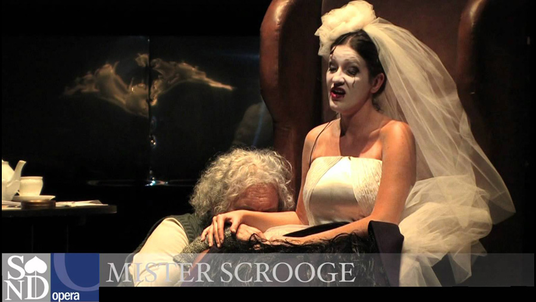

 |
||
 |
1959 |
 |
CAST |
||
|
||
Ebenezer Scrooge |
- |
Juraj Martvon (bass) |
Bob Cratchit |
- |
Janko Blaho (tenor) |
Mrs. Cratchit |
- |
Yvetta Czihalova (alto) |
Fred (Scrooge's nephew) |
- |
František Livora (tenor) |
Kate (Fred's wife) |
- |
Kristina Kusá (soprano) |
Martha Cratchit |
- |
Eufrosina Gyermekova (soprano) |
Carol |
- |
Drahoslava Kralovcova (soprano) |
Jacob Marley |
- |
Stanislav Benacka (bass) |
Mary (Scrooge's former fiancée) |
- |
Drahoslava Kralovcova (soprano) |
Kreith, a thief |
- |
Dita Gabajova (alto) |
Dilber, a thief |
- |
Helena Bartošová (alto) |
The cruiser |
- |
Štefan Gabriš (tenor) |
Merry Sister |
- |
Janka Gabcová (alto) |
Fred's First guest |
- |
Marta Meierová (alto) |
Fred's Second guest |
- |
Juraj Hrubant (bass) |
CREATIVE TEAM |
||
Conductor |
- |
Ladislav Holoubek |
Director |
- |
Karel Jernek |
Choreography |
- |
Karol Tóth |
Sets |
- |
Zbynek Kolár |
Costumes |
- |
Olga Filipi |
The cast list above is for the Slovak premiere (30 November 1963) |
||
PRODUCTION
|
||
Premiere: 5 October 1963, Kassel, Staatstheater (conductor Christophe von Dohnanyi) Czech premiere: 1964, Prague, The National Theater - Smetana Theater (SND) |
||
|
|
|